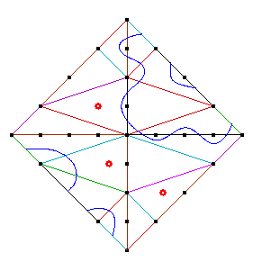
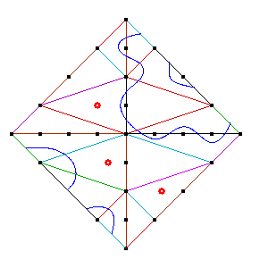

Viro's method for constructing real plane curves with prescribed topology [Vi83, Vi84] (see also [Ri]) begins with a subdivision of the simplex
The other ingredient is, for each facet F of the subdivision, a real polynomial fF whose Newton polytope is F and such that fF=0 defines a smooth curve in the torus . These polynomials additionally satisfy a compatibility condition: For an edge e common to two facets F and G, we have fF|e =fG|e, where the latter expressions denote the truncations of the polynomials fF and fG to the edge e (i.e., those monomials whose exponent vector is in e). Furthermore, this common truncation has no multiple factors (except x and y).
The real points of the real curve fF=0 lie
naturally in the four copies of the facet
F in (with the boundary points
representing the asymptotic behavior of solutions, or, equivalently,
the zeros of the restriction fF to the corresponding edge).
The pair consisting of these facets and curves
will be called the Newton portrait
of fF=0.
By the compatibility condition, the Newton portraits of the facet curves glue
naturally together, giving a topological curve in
.
Viro's theorem asserts that there exists a curve C of degree d
in such that the pair
(,C)
is homeomorphic to the pair
(,
).
The homeomorphism
preserves each coordinate axis and each quadrant.
The complex points of C are smooth, and
and C meet
each coordinate axis in the same number of points.
Shustin [Sh85] (see also [Sh93, Sh98]) showed how to modify this construction when the facet curves (fF=0) have singularities in . If a numerical criterion is satisfied (such a criterion is given in Theorem 1.7 of [Sh93]), there exists a curve of degree d in whose singularities are the disjoint union of the singularities of the facet curves, and whose topology is glued from that of the facet curves as before. (See Theorem~1.8 of [Sh93], originally proven in [Sh85].) In particular, Shustin shows the following.
Proposition 7.ii.1.
(See [Sh85]
and [Sh93)
If the singularities of the facet curves are only nodal, then there exists a
curve of degree d in whose only (complex) singularities
are the disjoint union of the singularities of the facet curves, and whose
topology is given by gluing the facet curves as in the Viro construction.
We use this to construct maximally inflected curves of any degree whose only ramification is flexes and whose double points are all solitary points. Consider the subdivision of given by the piecewise linear convex lifting function w which we define for some the vertices of . Set w(0,0) = w(d,0) = 0, and
|
w(0, 2i+2) = (2i+2)2 w(d-1-2i, 2i+1) = (2i+1)2 |
for i an integer between 0 and (d-1)/2 . |
| (i) | The triangle Hd with vertices {(0,0), (d,0), (d-1,1)}. |
| (ii) | The triangle Pi with vertices {(0,2i), (0,2i+2), (d-1-2i,2i+1)} for each integer i lying between 0 and (d-1)/2. |
| (iii) | The triangle Qi with vertices {(0,2i+2), (d-1-2i,2i+1), (d-3-2i,2i+3)} for each integer i lying between 0 and (d-3)/2. |
For each facet, we give polynomials fF that define curves with only solitary points. These will not necessarily satisfy the compatibility condition, but rather a weaker one: A common edge e between two facets F and G contains only two lattice points, and after possibly multiplying one of the facet polynomials by -1, the signs of the monomials from the two facet polynomials agree. This weak compatibility implies that there are monomial transformations with positive coefficients of the facet polynomials which do satisfy the compatibility criteria after adjusting the sign of one of the two polynomials. Since these monomial transformations do not change the geometry (number of solitary points, topology of the glued curve ), and the dual graph to the triangulation is a chain, it will suffice to construct polynomials satisfying the weaker criteria and giving the desired topology. We describe the monomial transformations. Consider first a common edge e between adjacent facets F and G of the triangulation. Since e has no interior lattice points, the restrictions of the facet polynomials to e will be binomials of the form
Since the dual graph of the triangulation is a chain, we encounter no obstructions when transforming the facet polynomials so that they satisfy the compatibility condition. More precisely, given the facet polynomial for Hd, we transform the facet polynomial for P0 as above, then the facet polynomial for Q0, then for P1, and et cetera.
We now give the facet polynomials. The reader is invited to check that the weak compatibility conditions are satisfied. The facet Hd is the Newton polytope of the polynomial hd := xd-1y - (1-x)(2-x) ... (d-x). Here are the Newton portraits of h3 and h4.
The remaining facet polynomials are based on an idea of Shustin [p. 849, Sh93]. Recall that the Chebyshev polynomials k(x) (defined recursively by
Finally, set
The curve Cd constructed from these data by Proposition 7.ii.1 has 3(d-2) flexes and solitary points as claimed. First, since the facet curves fk and gk each have k-1 solitary points, Cd has (d-2)+(d-3)+\cdots+1+0 = solitary points, and so is rational (in fact, the solitary points correspond to internal integer points of the Newton polygon). From the Newton portrait of hd, we see that Cd meets the x-axis in d points. Each facet Pk contributes 2 points of intersection of Cd with the y-axis. When d is even, this gives d points of intersection, and when d is odd, d-1 points of intersection. When d is odd, the last facet Q1 (corresponding to g1) contributes an additional point of intersection with the y-axis. Finally, each facet Qk contributes 2 points of intersection of Cd with the z-axis, giving d-2 points of intersection when d is even and d-1 points of intersection when d is odd. The facet Hd contributes an additional point, and when d is even, the facet (corresponding to f2) contributes one point.
As a result, the curve Cd has three separate segments, each intersecting a different coordinate axis in d consecutive points going in the same order on the curve and on the axis. Thus, by counting the Whitney indices by means of the Gauss map we find at least d-2 flexes on each segment. Hence, the curve constructed has 3(d-2) flexes.
We show the curves C4, C5, and C6. The curves next to C4 and C5 are curves we computed that have the same topological type as the patchworked curves.
 
